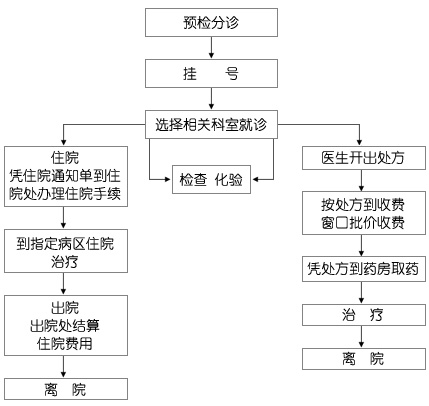
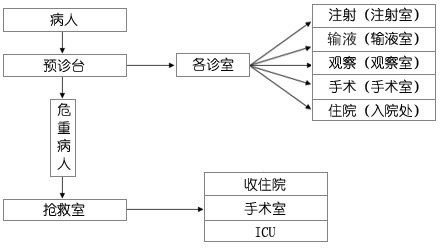
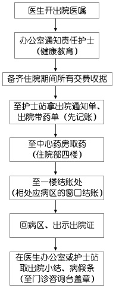
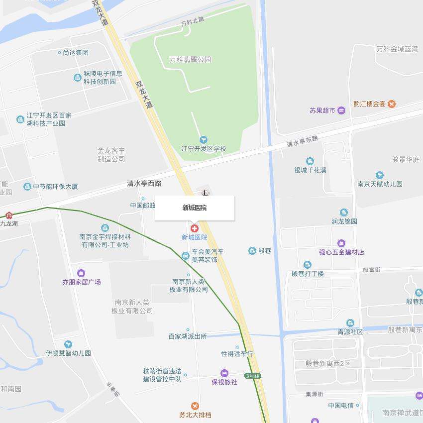
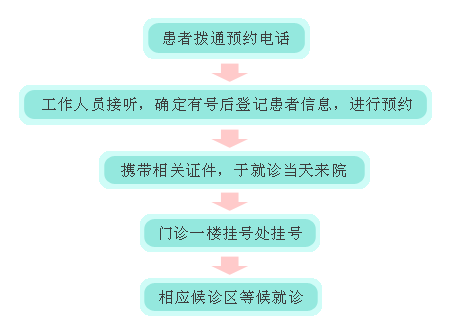
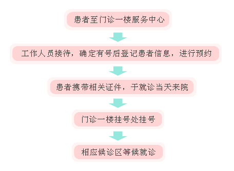

就医指南
就医流程
门 诊 病 人 就 诊 流 程
急 诊 病 人 就 诊 流 程
病 人 出 院 流 程
交通指南
地址：南京市江宁区双龙大道2186号
公交乘车路线：Y36、801、851、852、868、869、716路至殷巷北站下车；792、821、838路在清水亭东路站下车；816路在殷华街道站下车。
地铁乘坐路线：乘坐1号线南延线到百家湖站下，往南1000米至新城医院；乘坐3号线到九龙站下，往东300米至新城医院。
电话预约
电 话 预 约 须 知
预约时间为：周一至周日医院正常上班时间。
电话预约，患者需提供姓名、性别、年龄、联系方式、身份证号、就诊日期、专科等信息。
预约成功后，就诊当日在规定时间到医院门诊挂号处挂号。
预约电话：025-52120120 点击拨打
电 话 预 约 流 程
门诊预约
门 诊 专 家 预 约 挂 号 须 知
预约时请务必正确填写联系电话，以便医院预约中心工作人员电话与您联系。
请在预约就诊当天在约定时间提前半小时到门诊预约挂号窗口挂号，再到相应的专家门诊处就诊，过时电脑将自动取消预约号。
专家门诊号是有限资源，如您确定不来就诊，电话预约的请在预约就诊日前一天的15：00之前电话取消预约挂号。
预约成功后，如遇专家因事临时变更门诊时间，医院会设法与预约者联系或安排同级别的专家出诊。
现 场 预 约 流 程
